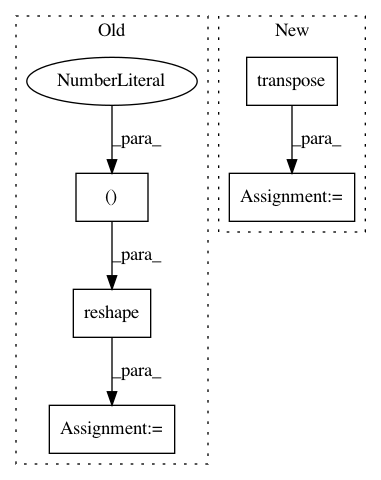

4b81ac641f68efc4c7e26ef03093781e28894c14,gluon/gluoncv2/models/superpointnet.py,SPDescriptor,hybrid_forward,#SPDescriptor#Any#Any#Any#,202
Before Change
pts_tr = pts.transpose(axes=(0, 2, 1))
for i in range(batch_size):
desc_map_i = desc_map[i]
pts_tr_i = pts_tr[i].reshape(shape=(2, -1))
pts_ravel_i = F.ravel_multi_index(pts_tr_i, shape=in_size)
desc_map_sorted_i = F.take(desc_map_i, pts_ravel_i)
desc_map_sorted_list.append(desc_map_sorted_i)
desc_map_sorted = F.stack(*desc_map_sorted_list)
After Change
desc_list = []
for i in range(batch_size):
desc_map_i = desc_map[i]
pts_i_tr = pts[i].transpose()
pts_ravel_i = F.ravel_multi_index(pts_i_tr, shape=in_size)
desc_map_sorted_i = F.take(desc_map_i, pts_ravel_i)
desc_list.append(desc_map_sorted_i)
In pattern: SUPERPATTERN
Frequency: 4
Non-data size: 5
Instances
Project Name: osmr/imgclsmob
Commit Name: 4b81ac641f68efc4c7e26ef03093781e28894c14
Time: 2019-07-04
Author: osemery@gmail.com
File Name: gluon/gluoncv2/models/superpointnet.py
Class Name: SPDescriptor
Method Name: hybrid_forward
Project Name: sony/nnabla-examples
Commit Name: 4f031d76c9a5b1e61080a4be62eee6f1ccd584fa
Time: 2019-05-14
Author: Akio.Hayakawa@sony.com
File Name: speech-synthesis/WaveNet/train.py
Class Name:
Method Name: train
Project Name: GPflow/GPflow
Commit Name: 55d342a0d0e44f3420877a8e9452adba7933ae72
Time: 2019-04-11
Author: art.art.v@gmail.com
File Name: gpflow/kernels/stationaries.py
Class Name: Stationary
Method Name: scaled_square_dist
Project Name: rtavenar/tslearn
Commit Name: eb194c4f73db1c511afad8559d8eb118391644a8
Time: 2020-04-18
Author: francois-33
File Name: tslearn/early_classification.py
Class Name: NonMyopicEarlyClassification
Method Name: _predict_single_series